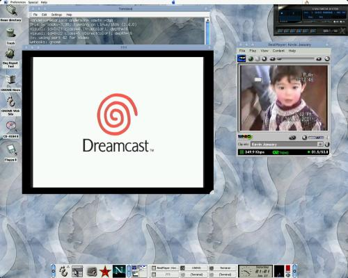

|
В
этой статье я хочу рассказать Вам о том, что можно сделать с 50-
долларовой TV-платой под Linux. Я предполагаю, что Вы знаете, как
компилировать ядро и как обычно устанавливаются приложения под Linux. Я не
буду вдаваться в детали, так как для каждого из разделов в сети Вы найдете
множество документации, чтобы изучить подробности.
Последнюю неделю я укрощал карту Pinnacle Studio PCTV на своем Linux-е. Ее
можно купить примерно за 50$ в большинстве онлайновых компьютерных
магазинов.
Позвольте мне сначала указать параметры моей машины:
1
Ghz Athlon
256 MB of RAM
60 Gb HD
VIA 97 Sound Card
Nvidia
TNT2
Running RedHat 7
Kernel 2.4.0
Xfree86 4.0.2
Pinnacle
Studio PCTV
Это
то, что Вам понадобится:
1.
Работающий под Linux звук
Настроить его можно с помощью /usr/sbin/setup (для RedHat) или
загрузив вручную драйверы звуковой карты, используя /sbin/insmod.
Я рекомендую обратится за помощью на http://www.opensound.com/,
если вы не смогли настроить звук с помощью тех двух процедур.
2.
Ядро, скомпилированное с поддержкой bttv драйвера (http://www.strusel007.de/Linux/bttv/)
В оригинальном ядре 2.2.х, поставляемом с RedHat, драйвер bttv уже
настроен.
Если вы решились компилировать ядро 2.4.0, активизируйте следующие
опции:
•
В
секции Character Devices-> I2C support, включите поддержку I2C, и I2C
bit-banging интерфейса
•
В
секции Multimedia Devices, включите Video For Linux, и в секции Video For
Linux, установите BT848 Video For Linux как модуль.
Можете добавить еще что-нибудь, вам необходимое, но за помощью
обращайтесь к документации.
После успешной компиляции ядра и модулей, перегрузите машину и
выполните /sbin/insmod bttv.
Теперь нам нужна программа, которая работала бы с TV
драйвером.
3.
xawtv
Загрузите эту программу с: http://www.strusel007.de/Linux/xawtv/index.html
Ничего необычного, загрузите, распакуйте, затем:
•
./configure
•
./make
•
./make install
Примечание: единственная известая мне причина, из-за которой
приложение может не работать, это если что-то не так с
/etc/X11/app-defaults/ , каталогами или путями.
3.1.
Запуск xawtv:
Запустить xawtv можно из Х-терминала просто набрав xawtv. Откроется
окно с шумами эфира (конечно если Вы выполнили все предыдущие шаги и TV
карта установлена :-D)
Щелкнув правой кнопкой мыши на TV экране, Вы получите меню, с
помощью которого сможете управлять программой. Узнать больше о настройках
можно из документации, поставляемой с пакетом (она неплохо
выполнена).
С помощью xawtv Вы можете смотреть эфирное или кабельное
телевидение, а также Ваши любимые VCR/DVD фильмы.
4.
Подключение Sega DreamCast.
Если все три шага выполнены правильно, Вы можете подключить Sega
DreamCast (или другую игровую приставку) к TV карте и играть, используя
xawtv.
Мои настройки:
Чтобы это заработало, я подключил видео выход Sega DreamCast к композитному входу TV карты и
через купленный в радиомагазине адаптер за 2$ аудио выход к линейному
входу звуковой карты. Почему именно так? Я сэкономил целых 20$ на ВЧ
адапторе для Sega. Возможен и такой вариант: подключаете VCR к TV карте, а
к VCR - приставку.
5.
Создание Real Video под Linux
А теперь самое интересная для меня часть, из-за которой я все это
делал. Во-первых, загрузите Real Producer Basic с: http://proforma.real.com/rn/tools/producer/index.html
(Примечание: Real Networks постояно меняет URL-ы своих продуктов, если эта
ссылка перестала работать, попробуйте: http://www.real.com/, ищите по
ключу Producer Basic).
После процесса инсталяции, получите права root, перейдите в каталог
установки real producer (в большинстве случаев:
/usr/local/realproducer-8.5), и выполните :
[root]# realproducer -o /tmp/testing.rm -t 7 -a 3 -v 0 -f 0
-b "Testing Video" -h "Anderson Silva" -c "Personal" -vc RV300 -l
2:1,8:1
В приведенном примере я захватил видеопоток с TV карты,
перекодировал его в Real Player 8 и записал в /tmp directory как
testing.rm.
Аргументы командной строки:
-t Target Audience (e.g. 7 is for Cable bandwidth)
-a Audio Format (e.g. 3 is for Stereo Sound)
-v Video Quality (e.g. 0 is for Normal Video)
-f File Type (e.g. 0 is for Single Rate Video)
-b Video Title
-h Author Information
-c Copyright Information
-vc Video Encoding (e.g. VC300 for Real Player 8, VC2000 for
Real Player 7)
-l audio, and video devices (e.g. 2:1 grab audio from
Line-In output, 8:1 grab video from Composite output on TV
Card).
Это не полный перечень возможных аргументов для управления
realproducer. Вы узнаете больше, запустив ./realproducer
help или изучив документацию (расположенную обычно в
/usr/local/realproducer-8.5/help/producer.htm)

Теоретически,
следующие карты тоже должны работать STB TV
PCI, Diamond
DTV2000, Videologic
Captivator PCI, AVerMedia
TV-Phone, Osprey-100,
IDS Imaging FALCON.
|